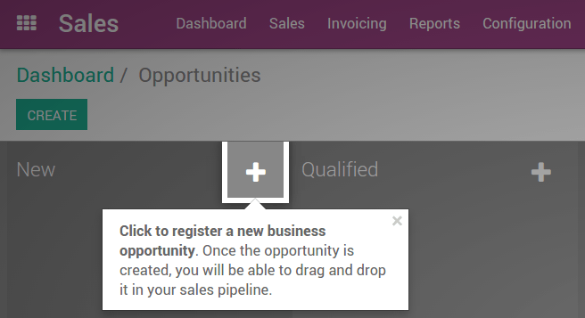
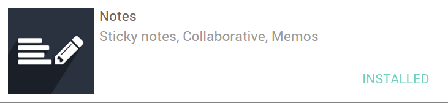

This document summarizes Odoo's Online services, our Success Pack implementation methodology, and best practices to get started with our product.
We recommend that new Odoo Online customers read this document before the kick-off call with our project manager. This way, we save time and don't have to use your hours from the success pack discussing the basics.
If you have not read this document, our project manager will review this with you at the time of the kick-off call.
Getting Started
Do not wait for the kick-off meeting to begin playing with the software. The more exposure you have with Odoo, the more time you will save later during the implementation.
Once you purchase an Odoo Online subscription, you will receive instructions by e-mail on how to activate or create your database. From this email, you can activate your existing Odoo database or create a new one from scratch.
If you did not receive this email, e.g. because the payment was made by someone else in your company, contact our support using our online support form.

Fill in the sign-in or sign-up screens and you will get your first Odoo database ready to be used.
In order to familiarize yourself with the user interface, take a few minutes to create records: products, customers, opportunities or projects / tasks. Follow the blinking dots, they give you tips about the user interface as shown in the picture below.
|  |
Once you get used to the user interface, have a look at the implementation planners. These are accessible from the Settings app, or from the top progress bar on the right hand side of the main applications.
These implementation planners will:
- help you define your goals and KPIs for each application,
- guide you through the different configuration steps,
- and provide you with tips and tricks to getting the most out of Odoo.
Fill in the first steps of the implementation planner (goals, expectations and KPIs). Our project manager will review them with you during the implementation process.
If you have questions or need support, our project manager will guide you through all the steps. But you can also:
- Read the documentation on our website: https://www.odoo.com/documentation/user
- Or send your questions to our online support through our online support form.
What do we expect from you?
We used to deploy full featured projects within 25 to 250 hours of services, which is much faster than any other ERP vendor on the market. Most projects are completed between 1 and 4 calendar months.
But what really differentiates between a successful implementation and a slow one, is you, the customer! From our experience, here is what leads to a successful project.
Your internal implementation manager
We will ask you for a single point of contact within your company work on the project with our project manager. To be efficient, this person must:
- be available at least 2 full days a week for the project, otherwise you will slow down the implementation. More is better, the fastest implementations have a full time project manager.
- have authority to take decisions on their own. Odoo usually transforms all departments of companies for the better. In such a project, you have a lot of decisions to take on small details. If there is too much back and forth between several decision makers, it could potentially seriously slow things down.
- have the leadership to train and enforce policies at most departments. This person must have the support, or be part, of the top management.
Integrate 95% of your business, not 100%
You probably chose Odoo because no other software allows for such a high level of automation, feature coverage and integration. But don't be an extremist in that direction.
Customizations cost you money, are more complex to maintain, add risks to the implementation and can cause issues with upgrades.
Standard Odoo can probably cover 95% of your business. Be flexible on the remaining 5%, otherwise that 5% will cost you twice the original project price. One always underestimates the hidden costs of customization.
- Do it the Odoo way, not yours. Be flexible, use Odoo the way it was designed. Learn how it works and don't try to replicate the way your old system(s) works.
- The project first, customizations second. If you really want customizations, phase them in at the end of the project, ideally after going into production. Once a customer starts using Odoo, they usually drop about 60% of their customization requests as they learn to do it the out of the box Odoo way. It is more important to have all your business processes working than customizing a screen to add fields or automate a few e-mails.
Our project managers are trained to help you make the right decision and measure the tradeoffs involved but it is much easier if you are aligned with them on the objectives.
Invest time in learning Odoo
Start your free trial. Play with the system. The more comfortable you are with Odoo, the better your decisions will be and the training phase will be that much easier.
Nothing replaces playing with the software, but here are some extra resources:
- Documentation: https://www.odoo.com/documentation/user
- Introduction Videos: https://www.odoo.com/r/videos
- Customer Reviews: https://www.odoo.com/blog/customer-reviews-6
Get things done
Want an easy way to start using Odoo? Install Odoo Notes to manage your to-do list for the implementation: https://www.odoo.com/page/notes. From your Odoo home, go to Apps and install the Notes application.
This module allows you to:
- Manage to-do lists for better interactions with your consultant;
- Share Odoo knowledge & good practices with your employees;
- Get acquainted with all the generic tools of Odoo: Messaging, Discussion Groups, Kanban Dashboard, etc.

Совет
This application is even compatible with the Etherpad platform (http://etherpad.org). To use these collaborative pads rather than standard Odoo Notes, install the following add-on: Memos Pad.
What should you expect from us?
Subscription Services
Cloud Hosting
Odoo provides a top notch cloud infrastructure including backups in three different data centers, database replication, the ability to duplicate your instance in 10 minutes, and more!
- Odoo Online SLA: https://www.odoo.com/page/odoo-online-sla
- Odoo Online Security: https://www.odoo.com/page/security
- Privacy Policies: https://www.odoo.com/page/odoo-privacy-policy
Support
Your Odoo Online subscription includes an unlimited support service at no extra cost, 24/5, Monday to Friday. To cover 24 hours, our teams are in San Francisco, Belgium and India. Questions could be about anything and everything from: how to use or configure, bugfix requests, payments or subscription issues.
Our support can be contacted through our online support form.
Note: The support team cannot develop new features, customize, import data or train your users. These services are provided by your dedicated project manager, as part of the Success Pack.
Upgrades
Once every two months, Odoo releases a new version. You will get an upgrade button within the Manage Your Databases screen. Upgrading your database is at your own discretion, but allows you to benefit from new features.
We provide the option to upgrade in a test environment so that you can evaluate a new version or train your team before the roll out. Simply fill our online support form to make this request.
Success Pack Services
The Success Pack is a package of premium hour-based services performed by a dedicated project manager and business analyst. The initial alloted hours you purchased is purely an estimate and we do not guarantee completion of your project within the first pack. We always strive to complete projects within the initial allotement however any number of factors can contribute to us not being able to do so, for example a scope expansion or "Scope Creep" in the middle of your implementation, new detail descoveries, or an increase in complexity that was not apparent from the beginning.
The list of services according to your success pack is detailed online: https://www.odoo.com/pricing-packs
The goal of the project manager is to help you get to production within the defined time frame and budget, i.e. the initial number of hours defined in your success pack.
His/her role includes:
- Project Management: review of your objectives & expectations, phasing of the implementation (road map), mapping of your business needs and the Odoo features.
- Customized Support: by phone, e-mail or webinar.
- Training, Coaching, and Onsite Consulting: remote trainings via screen sharing or training on premises. For on premise training sessions, you will be expected to pay extra for travel expenses and accommodations for your consultant.
- Configuration: decisions about how to implement specific needs in Odoo and advanced configuration. (e.g. logistic routes, advanced pricing structures, etc.)
- Data Import: we can do it or assist you on how to do it with a template prepared by the project manager.
If you have subscribed to a Custom App, you benefit from following extra services:
- Customization of screens
- Customization of reports (PDF): our project managers have access to developers for advanced customizations.
- Website Design: standard themes are provided to get started at no extra cost. However, our project manager can coach you on how to utilize the building blocks of the website designer. The time spent will consume hours of your success pack.
- Workflow automations: e.g. setting values in fields based on triggers, sending reminders by emails, automating actions, etc. For very advanced automations, our project managers have access to Odoo developers.
Implementation Methodology
We follow a lean and hands-on methodology, that is used to put customers in production in a short period of time and at a low cost.
After the kick-off meeting, we define a phasing plan to deploy Odoo progressively, by groups of apps.
The goal of the Kick-off call is for our project manager to come to an understanding of your business in order to propose an implementation plan (phasing). Each phase is the deployment of a set applications that you will fully use in production at the end of the phase.
For every phase, the steps are the following:
- On Boarding: Odoo's project manager will review Odoo's business flows with you, according to your business. The goal is to train you, validate the business process and configure according to your specific needs.
- Data: created manually or imported from your existing system. You are responsible to export the data from your existing system and Odoo's project manager will import them in Odoo.
- Training: once your applications are set up, your data imported, and the system is working smoothly, you will train your users. There will be some back and forth with your Odoo project manager to answer questions and process your feedback.
- Production: Once everyone is trained, your users start using Odoo.
Once you are comfortable using Odoo, we will fine-tune the process and automate some tasks and do the remaining customizations (extra screens and reports).
Once all applications are deployed and users are comfortable on Odoo, our project manager will not work on your project anymore (unless you have new needs) and you will use the support service if you have further questions.
Managing your databases
To access your databases, go to Odoo.com, sign in and click My Databases in the drop-down menu at the top right corner.

Odoo gives you the opportunity to test the system before going live or before upgrading to a newer version. Do not mess up your working environment with test data!
In that purpose, you can create as many free trials as you want (available for 15 days). Those instances can be instant copies of your working environment. To do so, go to the Odoo.com account in My Organizations page and click Duplicate.

You can find more information on how to manage your databases here.
Customer Success
Odoo is passionate about delighting our customers and ensuring that they have all the resources needed to complete their project.
During the implementation phase, your point of contact is the project manager and eventually the support team.
Once you are in production, you will probably have less interaction with your project manager. At that time, we will assign a member of our Client Success Team to you. They are specialized in the long-term relationship with our customers. They will contact you to showcase new versions, improve the way you work with Odoo, assess your new needs, etc...
Our internal goal is to keep customers for at least 10 years and offer them a solution that grows with their needs!
Welcome aboard and enjoy your Odoo experience!
См.также